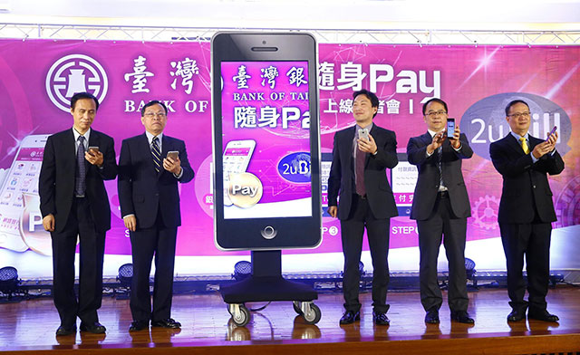
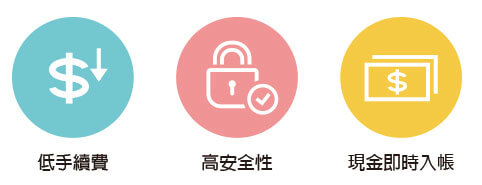
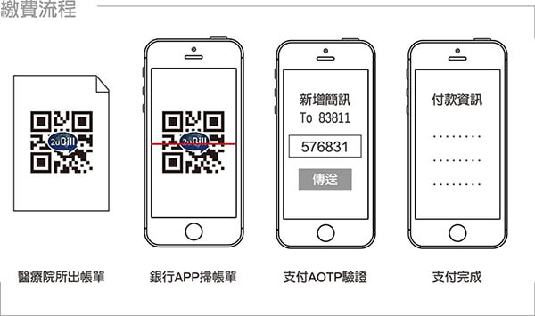

宣揚電腦 安全行動電子支付
迎接BANK 3.0，2uBill 安全帳單 + AOTP 雙重認證
發表日期：2017 / 03 / 01
宣揚電腦擁有26年專業系統整合經驗，常年與銀行合作，積極服務在地商圈，開發串接各種商務應用服務與模式，從 GOMAJI、支付寶，到現在的 2uBill、LINE PAY、Apple Pay，以及未來要整合的 Samsung Pay，將銀行與商圈整合成為共好平台，宣揚為銀行、商家與消費者成為 Bank3.0 贏家的幕後推手。

臺灣銀行舉辦「臺灣銀行隨身 Pay 上線記者會」，由該行董事長呂桔誠(左二)主持啟動儀式，左起為臺灣銀行總經理魏江霖，臺灣銀行董事長呂桔誠，OmniBud INC. 董事長林仲宇，宣揚電腦總經理黃志成，喜鴻旅行社總經理鄭穆誠。(攝影：王均峰)
21 號臺銀隨身 Pay 記者會，台銀董事長呂桔誠宣布隨身 Pay 服務正式上線，未來手機亦是錢包，隨身 Pay 可快速收款及付款，輕鬆支付各種服務，為全台首家綁定銀行帳戶扣款的支付服務。
對顧客需求而言，高安全性的 2uBill 安全帳單加上 AOTP 雙重認證的台銀隨身 Pay，具備安全與便利性，用戶只需申請台銀帳戶，就能在指定的特約商家進行支付，並透過用戶確認後即能由其台銀帳戶直接扣款付款，讓購物消費更方便。
對店家來說，與臺銀合作的特約商店，免投資增加額外硬體設備或系統，只要利用商家既有的 POS 系統進行設定，就可以使用「臺灣銀行隨身 Pay」服務，且商家支付的手續費較信用卡低，可提升商家導入隨身 Pay 的意願。
宣揚電腦為臺銀隨身 Pay 跟 2uBill 的合作夥伴，宣揚黃志成總經理亦在此次記者會說明自家提供的系統服務是如何與銀行的完美金流支付結合，不僅交易順暢，功操作簡單易懂，安全無慮，讓數位金融、行動支付、特店 POS 等服務，都能流暢且順手地進行，滿足店家與消費者的需求。
記者會新聞稿來源：http://news.cnyes.com/news/id/3723857
2uBill 安全帳單
3大優勢：

5 大特色：
- 隨時申請隨身支付：網路銀行 24 小時可申請，自選帳號，隨身支付。
- 不限手機系統：iOS、Android 皆可，無需換卡或特殊硬體規格。
- 安全支付帳戶扣款：雲端帳單+銀行認證雙重確認，帳戶即時款不會信用透支。
- 創新安全機制：2uBill 安全帳單 + AOTP 認證，雙重安全有保障。
- 手續費低：介接容易：合作商家手續費較低，POS 軟體更新即可使用。
9 大服務：
- 跨銀行標準化線上線下通用二維碼。
- 銀行品牌 APP 支付。
- 專利 AOTP 支付安全(支付安全需求高於轉帳)。
- 跨境銀行支付架構。
- 最低門檻 Web POS【產出 QR-code 即可繳費】。
- 手續費優於信用卡。
- 用戶無需下載銀行以外額外 APP。
- 提供新增的支付服務。
- 專利 2uBill 指定支付者身份的二維碼安全(避免偽冒二維碼與三方詐欺)。
